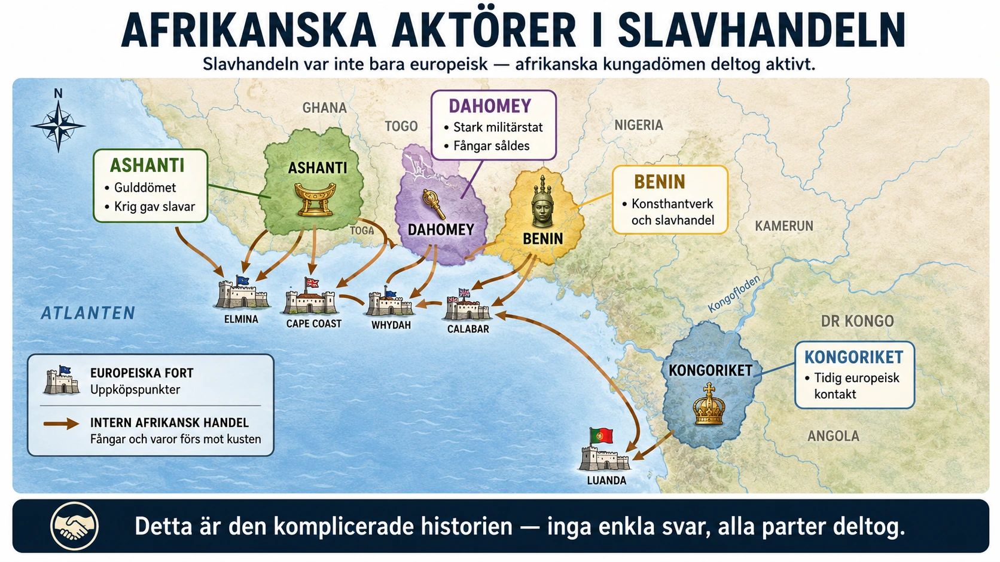

Två fel sätt att förstå slavhandeln
Det finns två vanliga missuppfattningar om hur transatlantiska slavhandeln fungerade. Båda är fel.
Den ena missuppfattningen: Européerna seglade till Afrika, gick i land, och fångade människor som om de tog djur i en skog. De afrikanska samhällena var passiva offer.
Den andra missuppfattningen (en överkorrigering): Eftersom afrikaner också var inblandade i slavhandeln är européerna inte särskilt ansvariga. Slavhandeln var "afrikanernas fel".
Båda dessa är fel. Den verkliga historien är mer komplex — och pedagogiskt viktigare.
Det är just komplexiteten denna djupdykning handlar om.
Slavhandel fanns före européerna
Det första att förstå är att slavhandel inte var något européerna uppfann. Slavhandel hade funnits i Afrika — och i resten av världen — i tusentals år.
Två huvudfaktorer inom afrikansk slavhandel innan européerna kom:
1. Trans-saharansk slavhandel. Genom Saharaöknen gick handelsvägar som hade transporterat afrikanska slavar till arabvärlden och Medelhavet i hundratals år. Mellan 700 och 1900 fördes uppskattningsvis 9 miljoner afrikaner norrut över Sahara som slavar. Det är nästan lika många som den transatlantiska slavhandeln, även om den utspelade sig under mycket längre tid.
2. Inom-afrikansk slavhandel. I många afrikanska samhällen var slaveri en del av samhällsstrukturen. Krigsfångar blev slavar. Människor som inte kunde betala skuld blev slavar. I vissa områden var slavar en stor del av befolkningen.
Det är viktigt att notera att afrikanskt slaveri ofta var annorlunda än det amerikanska. I många afrikanska samhällen kunde slavar gifta sig fritt, äga egendom och även stiga i hierarkin. Slaveri var inte alltid livslångt. Och slavar betraktades vanligen som människor — om än underordnade.
Men slaveri var där. När européerna kom till Afrikas kust på 1400-talet kom de inte till samhällen där frihet var självklart. De kom till en värld där människor redan kunde köpas och säljas under vissa omständigheter.
Vad förändrades med européerna
När européerna kom blev tre saker dock fundamentalt nya:
1. Skalan exploderade. Den transatlantiska slavhandeln blev mycket större än någon tidigare slavhandel. 12,5 miljoner människor på 400 år — en industri som inte hade haft sin like.
2. Slaveriets karaktär förändrades. Det amerikanska plantageslaveriet var helt annorlunda än traditionellt afrikanskt slaveri. Det var livslångt, det var ärftligt (barn ärvde slavstatus), det var rasligt definierat (svart = slav i amerikanskt tänk), och det var dehumaniserande på sätt som var nya. Slavar i amerikansk kontext var inte underordnade människor — de var enligt lag egendom.
3. Den ekonomiska drivkraften kom utifrån. I tidigare afrikansk slavhandel användes slavar inom Afrika eller i den närliggande arabvärlden. Med transatlantiska handeln gick efterfrågan från Europa via Amerika tillbaka till Afrika. Efterfrågan var nästan oändlig — sockerplantagerna behövde alltid mer arbetskraft. Detta gjorde att slavhandel blev en stor industri.
Vilka afrikanska aktörer var inblandade?
Vid Afrikas västkust mötte européerna inte ostrukturerade folkgrupper. De mötte organiserade kungariken med egna intressen, egna militärer och egna ekonomiska system.
Asante-riket (idag Ghana). En av Västafrikas mäktigaste stater på 1700- och 1800-talet. Asante hade en sofistikerad förvaltning, en stark armé och en central kungamakt. De var aktiva slavhandlare — de förde krig mot grannriken och sålde fångar till européerna. De var också skickliga förhandlare som spelade europeiska makter mot varandra för bästa pris.
Dahomey-riket (idag Benin). Ett annat mäktigt västafrikanskt rike. Dahomey hade en armé där kvinnor — så kallade Amazoner — utgjorde en central styrka. Riket var helt beroende av slavhandel för sin ekonomi. De krigade mot grannar för att fånga slavar.
Kongo-riket (centralafrika). Ett kristet kungarike som konverterat genom portugisiskt inflytande på 1400-talet. Inledningsvis var Kongo en handelspartner till portugiserna. Men slavhandeln växte och blev en allt större del av relationen. Vid 1700-talet hade Kongo försvagats kraftigt av befolkningsförluster.
Oyo-riket (idag Nigeria). Ett mäktigt yorubarike. Liksom andra var det involverat i slavhandel.
Dessa kungariken samarbetade med europeiska slavhandlare av flera skäl:
- Vapen. Européer betalade i tyg, alkohol, järnvaror — och vapen. Eldvapen från Europa gav militära fördelar mot grannar. Detta skapade ett krigssystem där slavar fick köpas för att skaffa vapen, som användes för att fånga fler slavar.
- Lyxvaror. Statussymboler som tyg, alkohol och metallföremål var eftertraktade.
- Politiskt övertag. Genom att kontrollera slavhandeln kunde härskare öka sin makt internt — de bestämde vem som blev slav och vem som inte.
Den moraliska komplexiteten
Hur ska vi förstå detta moraliskt?
Det är frestande att tänka i enkla termer: vem är "skyldig"? Européerna eller afrikanerna?
Men det är fel sätt att fråga. Historiska tragedier har sällan enkla skyldiga.
Européerna är ansvariga för:
- Att skapa efterfrågan som drev hela systemet
- Att utforma det dehumaniserande plantageslaveriet
- Att utveckla rasismen som rättfärdigade det
- Att bygga den koloniala strukturen som vidmakthöll det
Afrikanska kungariken är ansvariga för:
- Att aktivt sälja människor till européerna
- Att föra krig för att fånga slavar att sälja
- Att profitera på ett system som lät människor reduceras till varor
Vanliga afrikaner är offer — inte ansvariga. De som tillfångatogs hade inget val. De som dödades i krigen hade inget val. De som föds in i samhällen som blev fattiga och desorganiserade på grund av slavhandeln hade inget val.
Det är en svår tanke. Men historisk komplexitet är nästan alltid svår. Ingen "enkel skurk" finns. Bara ett system där olika aktörer hade olika roller och olika grad av ansvar.
Vad detta betyder för historieskrivningen
Detta är pedagogiskt viktigt av tre skäl.
1. Det räddar historisk ärlighet. Att enbart skylla på européerna eller enbart skylla på afrikaner är båda förenkligar. Historisk forskning kräver att vi tar med komplexiteten.
2. Det räddar afrikansk agens. Att tänka att alla afrikaner var passiva offer är att stryka deras handlande från historien. Vissa afrikaner var slavhandlare. Andra var slavar. Andra protesterade mot slavhandeln (det fanns afrikanska kungar och religiösa ledare som motsatte sig den). Att se hela bilden är att erkänna att afrikaner var fullvärdiga aktörer i sin egen historia, inte bara objekt för andra.
3. Det räddar dagens samtal. Detta är inte bara ett akademiskt problem. När människor idag pratar om slavhandelns arv används ofta förenklade berättelser. "Européerna var skyldiga." "Afrikaner var lika skyldiga." Båda missar målet. Den verkliga frågan är: hur formade detta system världen vi lever i idag, och vilka strukturer behöver förändras nu?
Vad ska du ta med dig?
Slavhandeln var en katastrof för Afrika. Det är ingen tvekan om det. Befolkningsförluster, krig, social desorganisation, ekonomisk skada som tog århundraden att återhämta sig från.
Men hur denna katastrof ägde rum är historiskt komplext. Den var inte bara européer som tog afrikaner. Den var ett system där europeiska och afrikanska aktörer samarbetade — alla med olika grad av ansvar, alla i olika positioner av makt.
Européerna skapade systemet, drev efterfrågan, definierade dehumaniseringen. Det är det centrala ansvaret.
Afrikanska kungariken samarbetade och tjänade på det. Det är ett underordnat men reellt ansvar.
Och slutligen — vanliga afrikaner var offer. Människorna som tillfångatogs, som splittrades från sina familjer, som dog under mellanpassagen, som arbetade till döds på plantager — de hade inget val. De är offren i denna historia.
Att förstå allt detta samtidigt är vad historisk tankeförmåga är. Det är inte att urskulda européer. Det är inte att glömma afrikansk agens. Det är att se hela bilden — och förstå att verkliga tragedier sällan har enkla skyldiga.
Detta är värt att komma ihåg när vi nu går vidare till nästa kapitel om reformationen — där också många olika aktörer med olika intressen kommer att forma en stor förändring i Europas historia.